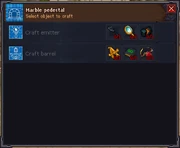

Portal
You'll be able to unlock the portal by completing everyone's stories. You'll need to complete Snake's dark ceremony to get both his and the Inquisitor's items, the Bishop and merchant give theirs together but both quests need to be finished. Finally, Ms. Charm and the astrologer hand theirs over together (if they were the last for you, your experience may vary).
Once you have all six relic items use them all at the pedestal and then enjoy a cutscene to finish things out and wrap it all up, sort of.
The ending cutscene will change if you have finished the Stranger Sins DLC



| Blueprints | Items |
|---|---|
 |